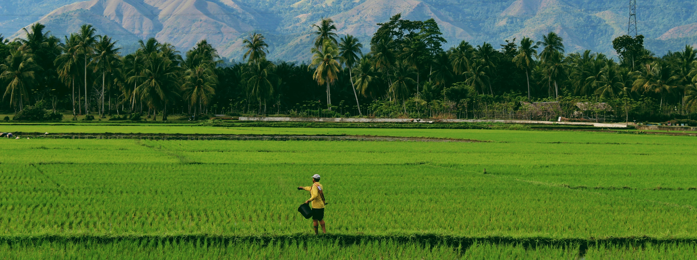
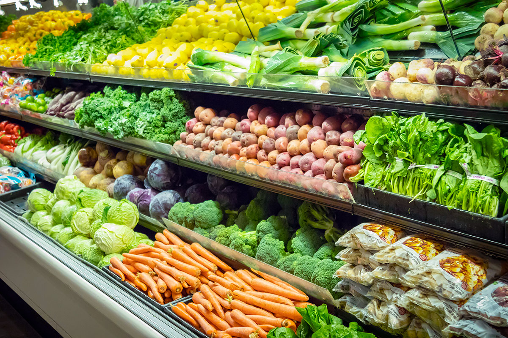
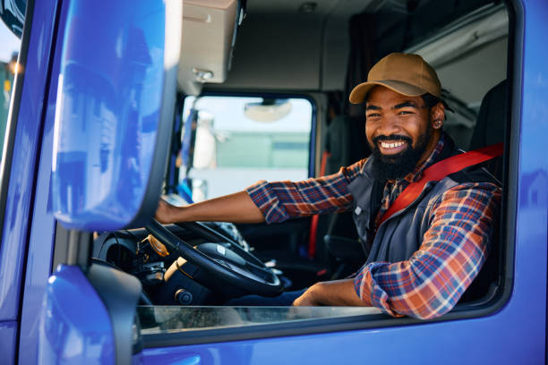

Farm Fresh Produce
Directly to the Market
Connecting Sri Lanka’s farmers to supermarkets and reliable logistics. Empowering rural communities through innovation.
Choose Your Role
Join our ecosystem and help build a more sustainable and efficient agricultural supply chain across the island.
Farmers

Farmers
Reach thousands of buyers directly and get fair market prices for your hard work.
Learn More →Supermarkets

Supermarkets
Source high-quality, traceable local produce directly from the source with real-time tracking.
Learn More →Drivers

Drivers
Earn consistent income by helping us move fresh goods across Sri Lanka safely and quickly.
Join the Fleet →